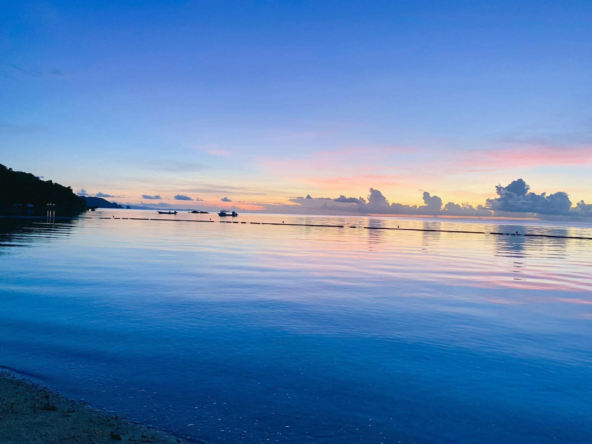
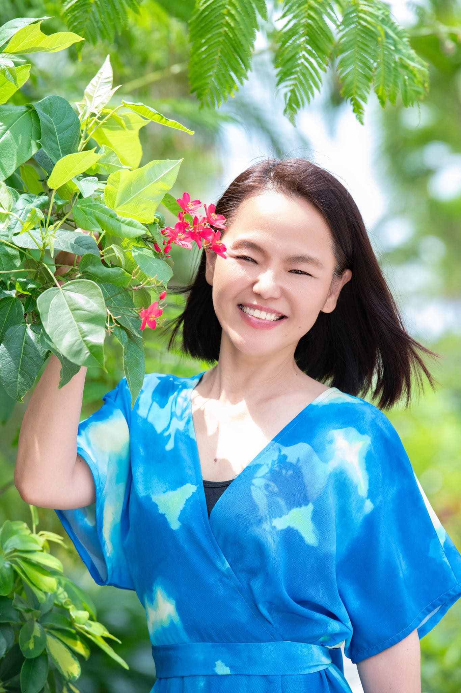

2026.11.12 - 11.14 | 2泊3日
海から産まれた自分に還る
〜女性限定 ｜ 腸から人生を整える 石垣島リトリート〜
もし一つでも当てはまるなら、この3日間はあなたのためのものです。

石垣島の雄大な自然に囲まれ、デジタルの波から完全に離れる3日間。ただの旅行ではありません。
プロの施術と、計算され尽くした食事、そして大自然という非日常の空間が、あなたの心と身体に蓄積された「ノイズ」と「老廃物」を全て洗い流します。
初日と2日目の朝、プロによる深い腸揉みを実施。老廃物を物理的にデトックスし「巡りの良い身体」へと導きます。
極力油を使わず、添加物ゼロの野菜を中心とした特別メニュー。主催者の理念を理解した専属シェフが内側から綺麗にします。
スマホの電源を切り、波の音や夕日の美しさに五感を研ぎ澄ませます。脳を休ませることで直感を取り戻します。
完全にリセットされ、最もオープンになった「今」だからこそ吸収できることがあります。最高の状態でインプットを受け取って帰ってください。
「仲の良いご友人同士だけで気兼ねなく過ごしたい」「設定された日程だと調整が難しい」という方へ。
3名様以上のグループでお申し込みの場合、ご希望のオリジナル日程にてリトリートを開催いたします。
※プログラムやスケジュールのカスタマイズについても、お気軽にご相談ください。
バスガイド、スナック経営、飲食業、司会、タクシードライバーなど、接客の現場を長年経験。
「人に寄り添うこと」を軸に生きてきました。
幼少期から重度の便秘に悩み、2週間〜1ヶ月排便がないことが当たり前の生活。
そんな自身の体験から腸の重要性に気づき、腸揉みと出会い、人生が大きく変化。
現在は【腸揉みサロン UP TO YOU】を石垣島にて運営。
同じように悩む女性が「本来持っている軽い身体と心」を取り戻すサポートをしています。
“腸から人生を整える”をコンセプトにした、女性のための腸ケアサロン。
小腸を中心に丁寧にほぐす独自の施術で、腸内に溜まったガスや滞りにアプローチ。
※早い方では施術後すぐに変化を感じる方も。
その場だけで終わらせず、水の飲み方や簡単なセルフケアもお伝えしています。

日程：2026年11月12日(木)・13日(金)・14日(土)
対象：女性限定
場所：沖縄県石垣島（詳細は参加者にお知らせします）
定員：限定5名様 （※3名様〜のオリジナル日程開催も可）
※現地集合から解散までのプログラム・宿泊・食事等の費用が含まれます（航空券等は含みません）。
※定員に達し次第、締め切りとさせていただきます。